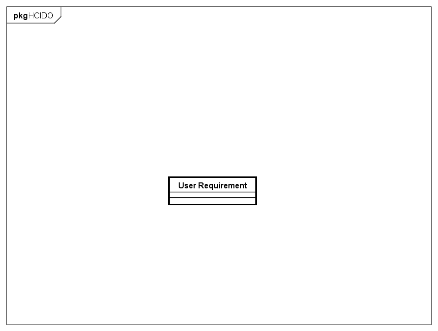

(Adapted from: ISO 9241-220:2019)
Networked ontologies used by HCIDO:
| Ontology | Relation | Integration Level |
Figure 1 presents the conceptual model of the HCIDO.

Figure 1. HCIDO conceptual model.
The following table shows the definitions for HCIDO concepts.
| Concept | Definition |
| User Requirement
|
A Requirement that refers to a User Goal. It can be related to user needs or capabilities that allow the user to achieve the goal by making use of the system in an effective, efficient, safe and satisfying manner. (Adapted from: ISO 9241-220:2019) |
| User Requirement |
User Requirement (0..*) refers to (1..1) User Goal
HCI Evaluation Criteria (0..*) refers to (0..*) User Requirement